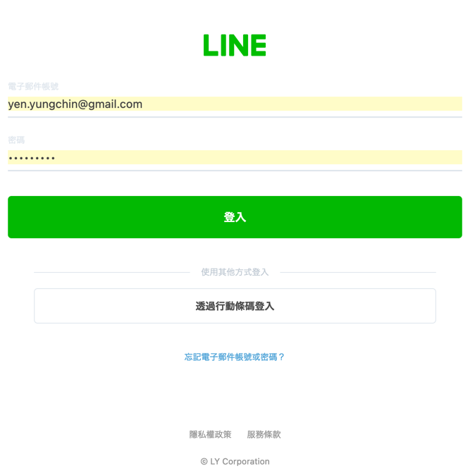

20240726Python專題式程式設計教學探究
Table of Contents

1. 研習內容
- 研習講義: 待補
- 研習對象: 有程式設計經驗，想快速入門Python程式設計的教師
- 研習時間:113年07月27日（星期五）9:00-16:00
- 研習地點:雲林智慧教育中心
1.1. 課表
| 時間 | 活動內容 | 主持人／主講人 | 助教 | 備註 |
|---|---|---|---|---|
| 9:00-9:10 | 報到、長官致詞 | 智慧教育中心服務團隊 | ||
| 9:10-10:00 | Python基礎語法實作 | 台南市台南一中顏永進老師 | 待聘 | |
| 10:00-10:10 | 休息 | 智慧教育中心服務團隊 | ||
| 10:10-12:00 | Python資料分析 | 台南市台南一中顏永進老師 | 待聘 | |
| 12:00-13:00 | 午膳休息 | 智慧教育中心服務團隊 | ||
| 13:00-14:30 | Python專題式程式設計 | 台南市台南一中顏永進老師 | 待聘 | |
| 14:30-14:40 | 休息 | 智慧教育中心服務團隊 | ||
| 14:40-16:00 | ChatGPT與程式學習 | 台南市台南一中顏永進老師 | 待聘 | |
| 16:00-16:10 | 綜合座談 | 智慧教育中心服務團隊 |
1.2. 預期成果
- 以Python撰寫一團購網站
- 提供團員線上登記團購內容
- 即時統計團購明細
- 當團購項目總數達標、以LINE自動通知團長
- 利用AI協助開發Python專案
- 利用Python呼叫AI模組-個人專屬聊天機器人
2. Python 基礎語法實作
- 9:10-10:00 / 50 mins
2.1. Colab編寫環境
- 20231111專題式程式教學1-Colab環境.ipynb
- 儲存格的類型
- Text Cell
- 練習1
- Code Cell: 輸出
- Code Cell: 輸入
2.2. 變數、輪入、輸出、運算
- 20231111專題式程式教學2-Python的變數.ipynb
- 變數
- 輸入變數
- 練習3
- 進階的輸入
- 運算式與內建函數
- 外部函數
- 練習4
2.3. 條件判斷
- 20231111專題式程式教學3-Python的條件判斷.ipynb
- 簡單的條件判斷: if / if else
- 練習5
- 簡單的條件判斷: if elif
- 練習6
- 條件中的條件
- 複雜的關係運算式
- 練習7
2.4. 自訂函數
- 20231111專題式程式教學4-Python自訂函數.ipynb
- function的種類
- function的定義
- 兩個或兩個以上的參數
- 練習8
2.5. 假裝很專業的UI設計
- 20231111專題式程式教學5-Python的UI設計.ipynb
- Gradio的用法
- 以Gradio輸入數字
- 練習9
3. Python資料分析
- 10:10-12:00 / 110 mins
3.1. 當資料變多後: List
- 20231111專題式程式教學6-Python的資料型別.ipynb
- List的基本操作
- 把一堆資料讀入List中
- 進一步的精確控制List
- 練習10
- 練習11
3.2. 第三方套件: MatPlotLib
- 20231111專題式程式教學7-Python的圖表.ipynb
- MatPlotLib基本語法: 折線圖
- 中文字的亂碼問題
- 練習12
- MatPlotLib基本語法: 長條圖
- MatPlotLib與Gradio
4. Python專題式程式設計
- 13:00-14:30 / 90 mins
4.1. 第三方套件: LINE Notification
- 申請LINE Notify
- 使用LINE帳號登入LINE Notify官網

Figure 1: 登入LINE網頁
- 點選右上角帳號底下的個人頁面
Figure 2: 登入後點選網頁右上角個人頁面
- 拉到網頁下方，點選發行權杖

Figure 3: 允許發行權杖
- 為權杖取名、選擇1對1接收LINE Notify通知、發行
Figure 4: 選擇LINE通知模式
- 點選複製，把權杖先找個地方貼上(可以先貼在colab的Text Cell)
Figure 5: 複製權杖、貼在記事本
- 查看你的LINE通知
Figure 6: LINE通知
- 使用LINE帳號登入LINE Notify官網
4.2. 小組實作
- 團購輸入
- 統計
- 圖表
- LINE通知
5. ChatGPT與程式學習
- 14:40-16:00 / 80 mins